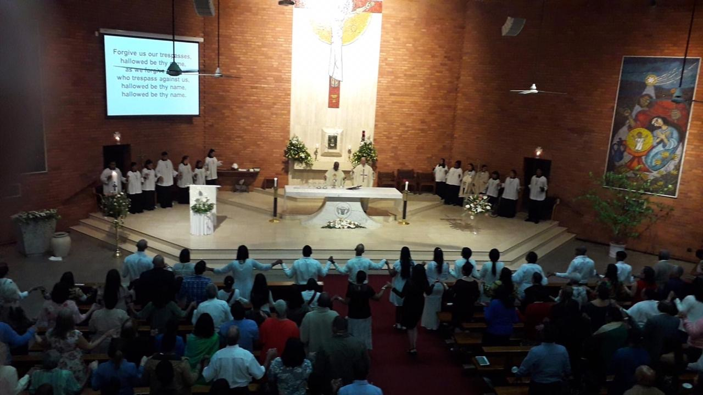

<!DOCTYPE html>
<html lang="en">
<head>
    <meta charset="UTF-8">
    <meta name="viewport" content="width=device-width, initial-scale=1.0">
    <title>Parish of St Joseph</title>
    <link rel="stylesheet" href="Parish.css">
    <!-- Font Awesome for social icons -->
    <link rel="stylesheet" href="https://cdnjs.cloudflare.com/ajax/libs/font-awesome/6.4.0/css/all.min.css">
</head>
</html>
<body>
    <header class="hero">
        <nav class="navbar">
            <div class="logo">
                <h1>Parish of St Joseph</h1>
            </div>
            <ul class="nav-menu">
                
                <li class="dropdown">
                    <button class="dropbtn" aria-expanded="false">HOME</button>
                    <ul class="dropdown-menu">
                        
                        <li><a href="index.html">Welcome</a></li>
                    </ul>
                </li>
                <li class="dropdown">
                    <button class="dropbtn">ABOUT US</button>
                    <ul class="dropdown-menu">
                        <li><a href="OurParish.html">Our Parish</a></li>
                        <li><a href="Clergy.html">Our Clergy</a></li>
                        <li><a href="ParishCouncil.html">Parish Council</a></li>
                    </ul>
                </li>
                <li class="dropdown">
                    <button class="dropbtn">Join Us</button>
                    <ul class="dropdown-menu">
                        <li><a href="ParishReg.html">Join Our Parish</a></li>
                        <li><a href="BecomeParish.html">Become a Catholic</a></li>
                    </ul>
                </li>
                <li class="dropdown">
                    <button class="dropbtn">Contact us</button>
                    <ul class="dropdown-menu">
                        <li><a href="ContactUs.html">Information</a></li>
                    </ul>
                </li>
                <li class="dropdown">
                    <button class="dropbtn">News</button>
                    <ul class="dropdown-menu">
                        <li><a href="MessageFather.html">Fathers Message</a></li>
                    </ul>
                </li>
            </ul>
        </nav>
    </header>

    <section class="mission-section">
        <div class="container">
            <h2>Our Vision and Mission</h2>
            <p class="mission-subtitle">To be an inviting, Spirit-filled community of MISSIONARY DISCIPLES at the service of all our sisters and brothers.</p>
            <p class="mission-text">Our Parish is a place where MISSIONARY DISCIPLES are equipped to grow and build the Kingdom of God. To strengthen our relationship with Jesus Christ, we Break Bread and listen to the Scriptures; attend Bible Study, Alpha and Open Forum sessions together. We invite the stranger in, feed the hungry, clothe the poor, visit the sick and journey with the <strong>broken-hearted</strong>. We nurture our community by connecting with our brothers and sisters in Vine Groups and at social events.</p>
        </div>
    </section>

    <div class="p-container">
        <div class="p-content">
            <h1>OUR CHURCH HISTORY</h1>
            
            <p>The parish began in 1852 by Father Sabon, the first parish priest of Durban. He built the first Catholic church placed under the protection of St Joseph on the corner Grey street. As the years went by the town's population increased and he began to make plans for a bigger church and it was not until 1881 that work could be started. It was situated on the thoroughfare of West Street, and the tower could be seen from all parts of the town.</p>
            
            <p>Father Sabon, worn out by hard work, died in 1883. In November 1902 arrangements were made for the removal of the entire building, which has to be rebuilt in Stamford Hill Road, Greyville in 1903 was out of the "country". The foundation of this St. Joseph's parish was laid on New Year's Day 1903, and on the 12th of June 1904, St. Joseph's was opened for Divine Worship.</p>
            
            <p>As the years passed, Greyville became industrialised and residents moved away. New major road developments were taking place in Durban and a new site for St. Joseph's was required. It was then the site on Florida Road was purchased and in 1975, the parish moved to the new St. Joseph's in Morningside. On the 26th of January 1976, the present St. Joseph's was officially blessed by Archbishop Denis Hurley, OMI. The present church was consecrated by Archbishop (now Cardinal Napier, OFM) on the 3rd of October 1993.</p>
        </div>
        
        <div class="p-image-container">
            
        </div>
    </div>

    <footer class="social-footer">
        <div class="footer-container">
            <h2 class="footer-title">Follow Us</h2>
            <div class="social-icons">
                <a href="https://www.facebook.com/catholicparishofstjoseph/" class="social-icon" aria-label="Facebook">
                    <i class="fab fa-facebook-f"></i>
                </a>
                <a href="https://x.com/stjosephdbn" class="social-icon" aria-label="Twitter">
                    <i class="fab fa-twitter"></i>
                </a>
                <a href="https://www.instagram.com/parishofstjosephmorningside/" class="social-icon" aria-label="Instagram">
                    <i class="fab fa-instagram"></i>
                </a>
                <a href="https://www.youtube.com/c/ParishofStJosephMorningside" class="social-icon" aria-label="YouTube">
                    <i class="fab fa-youtube"></i>
                </a>
                <a href="https://www.tiktok.com/@stjoesephschurch" class="social-icon" aria-label="TikTok">
                    <i class="fab fa-tiktok"></i>
                </a>
            </div>
        </div>
    </footer>

    <button class="scroll-top" onclick="window.scrollTo({top: 0, behavior: 'smooth'})">
            <span>↑</span>
        </button>

</body>
</html>